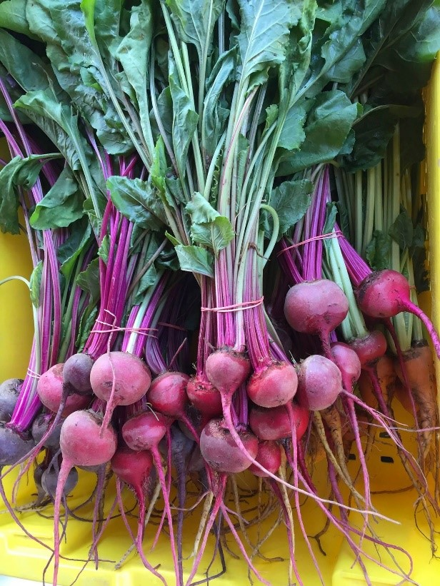
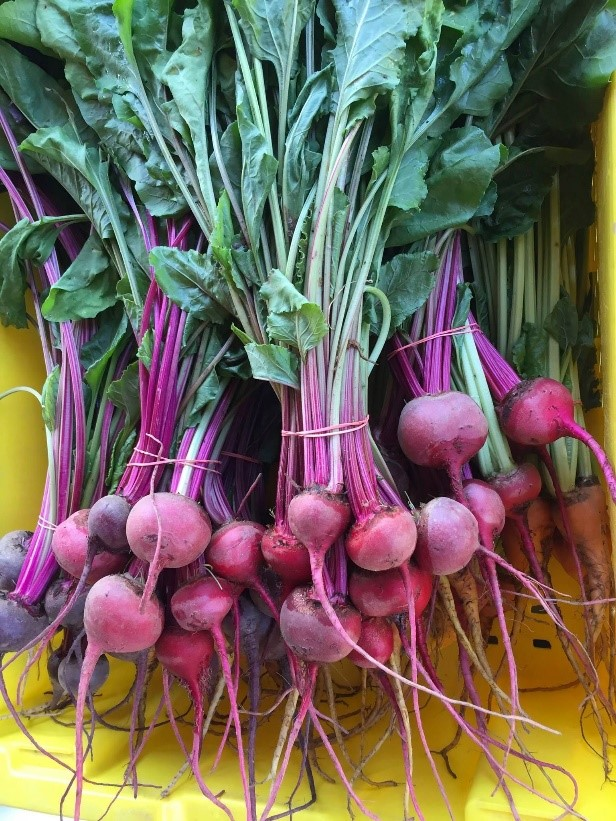

Urban Tree Connection remains a genuinely grassroots organization, driven by the time, commitment, and partnership of individuals like you. Your support enables us to continue our core work and programming and be good stewards of our community-based gardening and sites. Your generosity goes a long way – from producing beautiful farming produce that allows neighbors to feed themselves and one another to cultivating future farmers and food justice advocates.
The Urban Tree Connection is a 501 (c)(3) organization, and all contributions are fully tax-deductible. We hope that you'll consider donating to Urban Tree Connection in one of the following ways:

 

Online
Click on our PayPal donation button below, and make a gift using your MasterCard, Visa, American Express, or Discover card:
By Mail
Check can be made payable to “Urban Tree Connection” and send to the following address:
Urban Tree Connection
c/o First African Presbyterian Church
4159 West Girard Avenue
Philadelphia, PA 19104.
In-Kind
Help support our work by donating a critically needed item from our Wish List. If you are interested in donating one of these items, call our office: 215-877-7203 or send us an email: info@urbantreeconnection.org, to arrange delivery or set a drop-off time.